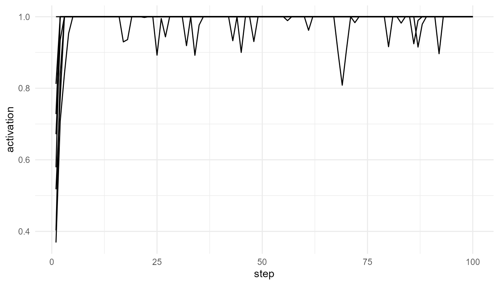
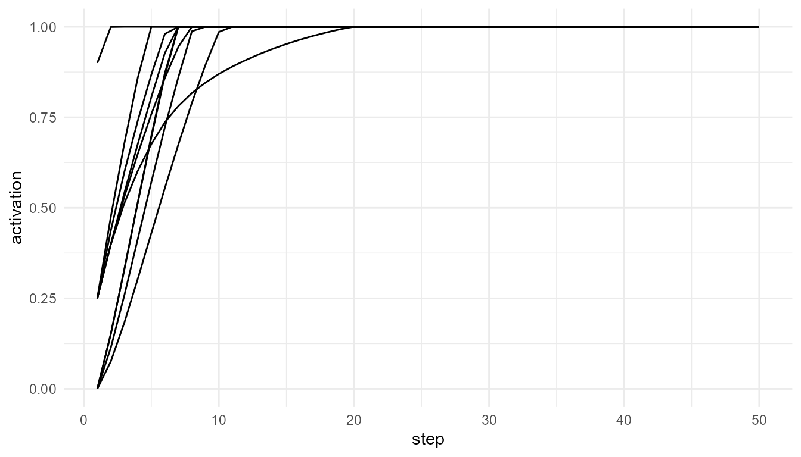
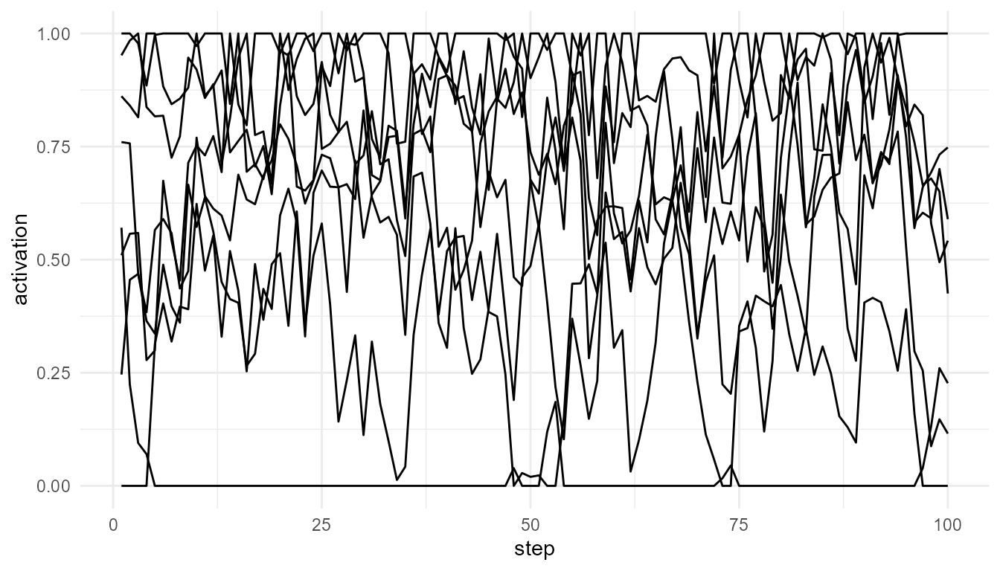

Comparing Consciousness Theories with Toy Models
Source:vignettes/comparing-theories.Rmd
comparing-theories.RmdPurpose
This article compares how simplified simulations can represent different theoretical approaches in consciousness studies. The goal is not to decide which theory is correct. Instead, the goal is to clarify what each theory emphasizes, what kind of mechanism it proposes, and how those mechanisms can be translated into educational toy models.
The central question is:
How can computational models help us compare theories of consciousness without reducing consciousness to a single number or mechanism?
consciousnessModelR takes a modular approach. It
separates attention, competition, broadcast, integration, and threshold
crossing into different functions. This allows learners to examine each
theoretical component independently before considering how the
components may interact.
Why compare theories with toy models?
Theories of consciousness often operate at different explanatory levels. Some focus on cognitive access, some on neural architecture, some on information structure, and others on subjective experience. Because these theories do not always explain the same thing, direct comparison can be difficult.
Toy models are useful because they force theoretical ideas to become explicit. A theory that says consciousness depends on “global availability” must clarify what availability means. A theory that emphasizes “integration” must clarify what is being integrated. A theory that refers to “thresholds” must specify what crosses the threshold and what changes afterward.
A toy model is therefore not a substitute for a theory. It is a tool for examining the structure of a theory.
Theories and package functions
| Function | Inspired by | Main concept | What it helps illustrate |
|---|---|---|---|
simulate_global_workspace() |
Global Workspace Theory | Competition and global access | How one process may dominate and become globally available |
attention_competition_model() |
Attention and selection models | Priority-based selection | How salience, novelty, and goals shape attentional priority |
broadcast_network() |
Broadcast/access theories | Network-wide availability | How selected information spreads across a system |
simulate_information_integration() |
Information integration theories | Integration and differentiation | How system structure may combine unity and diversity |
consciousness_threshold() |
Threshold/access models | Activation crossing a boundary | How theoretical assumptions define access-like events |
This structure is intentionally pluralistic. The package does not assume that one theory fully explains consciousness. Instead, it allows learners to compare what different theories treat as important.
Access, integration, and experience
A major challenge in consciousness studies is that different theories may explain different aspects of consciousness.
Global Workspace Theory emphasizes access. It asks how information becomes available for report, reasoning, memory, and action (Baars 1988; Dehaene 2014).
Information integration approaches emphasize system organization. They ask whether a system has both unity and differentiation, and whether the whole has informational properties not reducible to independent parts (Tononi 2004; Oizumi, Albantakis, and Tononi 2014).
Attention models emphasize selection. They ask why some signals receive priority while others remain in the background (Desimone and Duncan 1995; Posner 1994).
Threshold models emphasize transition. They ask when weak or local processing becomes stable, reportable, or globally available (Sandberg et al. 2010).
These are related questions, but they are not identical. A system could select information without broadcasting it. It could broadcast information without satisfying a strong integration criterion. It could cross a threshold without explaining subjective experience. These distinctions are central to responsible theory comparison.
Model 1: Global workspace and access
Global Workspace Theory describes consciousness as system-wide availability. Many processes operate locally, but only some information becomes globally accessible.
gw <- simulate_global_workspace(
n_processes = 8,
steps = 100,
ignition_threshold = 0.75,
seed = 1
)
head(gw)
#> step process activation winner is_winner broadcast ignited
#> 1 1 P1 0.5175416 P7 FALSE 0 TRUE
#> 2 1 P2 0.4026213 P7 FALSE 0 TRUE
#> 3 1 P3 0.7278461 P7 FALSE 0 TRUE
#> 4 1 P4 0.8121581 P7 FALSE 0 TRUE
#> 5 1 P5 0.3688088 P7 FALSE 0 TRUE
#> 6 1 P6 0.5790204 P7 FALSE 0 TRUE
plot_consciousness_sim(
gw,
x = "step",
y = "activation",
group = "process"
)
Interpreting the global workspace model
This model asks whether a process can dominate competition and cross an ignition threshold. It is useful for representing the transition from local activity to global availability.
The key theoretical assumption is that conscious access depends on more than activation alone. A signal must become available to a wider system.
This model therefore emphasizes:
- competition among processes;
- selection of a winning process;
- ignition or threshold crossing;
- global availability.
It does not explain subjective experience. It models access-like processing.
Model 2: Attention and selection
Attention models focus on priority. A system cannot process all signals equally, so some signals are selected for enhanced processing.
attn <- attention_competition_model(
n_signals = 6,
steps = 100,
weights = c(0.4, 0.3, 0.3),
seed = 1
)
head(attn)
#> step signal salience novelty goal_relevance priority selected
#> 1 1 S1 0.2655087 0.94467527 0.6870228 0.6251114 FALSE
#> 2 1 S2 0.3721239 0.66079779 0.3841037 0.6955436 FALSE
#> 3 1 S3 0.5728534 0.62911404 0.7698414 0.8038564 FALSE
#> 4 1 S4 0.9082078 0.06178627 0.4976992 0.4849447 FALSE
#> 5 1 S5 0.2016819 0.20597457 0.7176185 0.0000000 FALSE
#> 6 1 S6 0.8983897 0.17655675 0.9919061 1.0000000 TRUE
#> selected_signal
#> 1 S6
#> 2 S6
#> 3 S6
#> 4 S6
#> 5 S6
#> 6 S6
table(attn$selected_signal)
#>
#> S1 S3 S4 S6
#> 24 60 114 402Interpreting the attention model
The attention model asks which signal receives priority. Selection depends on salience, novelty, goal relevance, and noise.
This model is important because attention often shapes conscious access, but attention is not identical to consciousness. A selected signal may become a candidate for access, but it may not necessarily become conscious.
This model therefore emphasizes:
- limited processing capacity;
- competition among signals;
- salience, novelty, and goals;
- priority-based selection.
It does not model global availability or subjective experience by itself.
Model 3: Broadcast and availability
Broadcast models focus on what happens after a signal is selected. A signal may remain local, or it may spread across a network and become available to multiple systems.
net <- broadcast_network(
n_nodes = 10,
steps = 50,
connection_probability = 0.30,
seed = 1
)
head(net$time_series)
#> step node activation source_node
#> 1 1 N1 0.90 N1
#> 2 1 N2 0.00 N1
#> 3 1 N3 0.25 N1
#> 4 1 N4 0.25 N1
#> 5 1 N5 0.25 N1
#> 6 1 N6 0.25 N1
plot_consciousness_sim(
net$time_series,
x = "step",
y = "activation",
group = "node"
)
Interpreting the broadcast model
This model asks how widely information becomes available. A densely connected network may allow activation to spread more broadly. A sparse network may keep information relatively local.
Broadcast is theoretically important because access-oriented theories often treat consciousness as a change in availability. Information becomes more functionally powerful when it can influence memory, reasoning, report, and action.
This model therefore emphasizes:
- network architecture;
- spread of activation;
- local versus distributed availability;
- functional access.
It does not determine whether broadcast is sufficient for consciousness.
Model 4: Information integration
Information integration approaches ask a different kind of question. They are less focused on report and more focused on system organization.
info <- simulate_information_integration(
n_components = 8,
steps = 100,
connection_probability = 0.30,
seed = 1
)
info$summary
#> mean_connectivity shared_information differentiation integration_score
#> 1 0.40625 0.1653532 0.3432453 0.02305742
plot_consciousness_sim(
info$time_series,
x = "step",
y = "activation",
group = "component"
)
Interpreting the integration model
The package function does not compute formal phi. Instead, it provides a simplified educational proxy based on connectivity, shared activity, and differentiation.
This model asks whether a system has both unity and diversity. A completely disconnected system lacks integration. A completely uniform system may lack differentiation. The theoretical interest lies in the balance between the two.
This model therefore emphasizes:
- system-level organization;
- connectivity;
- shared activity;
- differentiation;
- integration as a structural property.
It does not model reportability or global broadcast directly.
Model 5: Threshold-based access
Threshold models ask when continuous activation should be classified as access-like.
thresholded <- consciousness_threshold(
gw,
activation_col = "activation",
threshold = 0.70
)
head(thresholded)
#> step process activation winner is_winner broadcast ignited threshold
#> 1 1 P1 0.5175416 P7 FALSE 0 TRUE 0.7
#> 2 1 P2 0.4026213 P7 FALSE 0 TRUE 0.7
#> 3 1 P3 0.7278461 P7 FALSE 0 TRUE 0.7
#> 4 1 P4 0.8121581 P7 FALSE 0 TRUE 0.7
#> 5 1 P5 0.3688088 P7 FALSE 0 TRUE 0.7
#> 6 1 P6 0.5790204 P7 FALSE 0 TRUE 0.7
#> above_threshold threshold_distance
#> 1 FALSE -0.18245842
#> 2 FALSE -0.29737870
#> 3 TRUE 0.02784607
#> 4 TRUE 0.11215808
#> 5 FALSE -0.33119124
#> 6 FALSE -0.12097958
table(thresholded$above_threshold)
#>
#> FALSE TRUE
#> 5 795Interpreting the threshold model
Thresholding is useful because many theories assume a transition from weak processing to stronger access-like processing. However, the threshold is a modeling assumption.
A low threshold makes access-like events common. A high threshold makes them rare. This shows that theoretical conclusions can depend on how access is defined.
This model therefore emphasizes:
- classification of activation values;
- access boundaries;
- above-threshold and below-threshold processing;
- sensitivity to assumptions.
It does not reveal the true boundary of consciousness.
Comparing theoretical commitments
The models differ in what they treat as central.
| Theory family | Central question | Package representation |
|---|---|---|
| Attention models | Which signal is prioritized? | attention_competition_model() |
| Global workspace models | Which signal becomes globally available? | simulate_global_workspace() |
| Broadcast models | How widely does selected information spread? | broadcast_network() |
| Integration models | How unified and differentiated is the system? | simulate_information_integration() |
| Threshold models | When does activation count as access-like? | consciousness_threshold() |
These questions can be combined, but they should not be collapsed into one another. A mature theory of consciousness may need to explain attention, access, integration, reportability, and subjective experience together.
A simple combined workflow
The following workflow shows how the functions can be used together conceptually.
attn <- attention_competition_model(
n_signals = 6,
steps = 50,
seed = 12
)
gw <- simulate_global_workspace(
n_processes = 6,
steps = 50,
ignition_threshold = 0.75,
seed = 12
)
gw_thresholded <- consciousness_threshold(
gw,
activation_col = "activation",
threshold = 0.75
)
net <- broadcast_network(
n_nodes = 8,
steps = 50,
seed = 12
)
info <- simulate_information_integration(
n_components = 8,
steps = 50,
seed = 12
)
list(
selected_attention_signals = table(attn$selected_signal),
global_workspace_ignition = table(gw$ignited),
threshold_crossings = table(gw_thresholded$above_threshold),
integration_summary = info$summary
)
#> $selected_attention_signals
#>
#> S2 S3 S6
#> 126 162 12
#>
#> $global_workspace_ignition
#>
#> TRUE
#> 300
#>
#> $threshold_crossings
#>
#> FALSE TRUE
#> 17 283
#>
#> $integration_summary
#> mean_connectivity shared_information differentiation integration_score
#> 1 0.40625 0.1907601 0.3626935 0.02810739Interpreting the combined workflow
This workflow should not be interpreted as a complete theory of consciousness. Rather, it shows how different theoretical components can be placed side by side.
The attention model asks what is prioritized. The global workspace model asks what becomes access-like. The broadcast model asks how information spreads. The integration model asks what kind of system organization is present. The threshold model asks how activation is classified.
Together, they form a teaching framework for comparing assumptions.
What all toy models leave out
All the models in this package are intentionally simplified. They leave out many important features of real consciousness, including:
- subjective experience;
- embodiment;
- emotion;
- memory in detail;
- self-awareness;
- metacognition;
- biological neural dynamics;
- developmental history;
- social and linguistic context.
This limitation is not a weakness if it is stated clearly. Toy models are not meant to reproduce the full phenomenon. They are meant to make theoretical assumptions easier to inspect.
Could artificial systems satisfy model criteria?
One important philosophical question is whether an artificial system could satisfy some of these model criteria without being conscious.
For example, an artificial system might show attention-like selection, global broadcast, threshold crossing, or high integration. Would that be enough for consciousness? Different theories answer this question differently.
Global workspace theorists may emphasize functional access. Information integration theorists may emphasize system structure. Philosophers concerned with the hard problem may argue that functional organization still does not explain subjective experience (Chalmers 1996).
The package does not resolve this debate. It provides tools for examining why the debate is difficult.
Educational use
This article can support several classroom or self-study activities:
- Run each model with default settings.
- Change one parameter at a time.
- Ask what theoretical assumption the parameter represents.
- Compare how the output changes.
- Discuss what the model captures and what it omits.
This approach helps students move from memorizing theories to actively analyzing them.
Reflection questions
- Does attention imply consciousness?
- Can information be globally broadcast without being consciously experienced?
- Can information be integrated without being reportable?
- Does threshold crossing represent awareness or only access?
- Could an artificial system satisfy functional criteria without subjective experience?
- Are access consciousness and phenomenal consciousness explained by the same mechanisms?
- Which theory is best represented by toy simulation, and which parts resist simulation?
- What would need to be added to make the models more realistic?
Key takeaway
Toy models do not solve the problem of consciousness. Their value is conceptual. They make assumptions visible, allow theories to be compared, and help learners understand the difference between attention, access, broadcast, integration, and subjective experience.
consciousnessModelR should therefore be understood as an
educational modeling framework. It supports careful comparison of
theories while preserving the distinction between simulated mechanisms
and consciousness itself.